|
|
| seagrasses text index | photo index |
| Seagrasses > Family Hydrocharitaceae |
| Tape
seagrass Enhalus acoroides Family Hydrocharitaceae updated Oct 2016
Where seen? Tape seagrass can be seen on many our undisturbed shores. Pulau Semakau has the largest bed of tape seagrass that ordinary people can visit. It covers kilometres of the shoreline. Elsewhere, tape seagrass is usually seen in clumps sparsely distributed along the shore, usually near coral rubble. There is only one species of Enhalus. Tape seagrass has a wide distribution and is found from tropical areas in Africa to the Pacific Islands. It grows well in sheltered bays or areas sheltered by mangroves. It may form dense meadows as the dominant seagrass, or small clumps among other seagrasses. Features: Tape seagrass has the longest leaves of seagrasses found on our shores. The strap-like leaves are 1-2cm wide and 30cm-1.5m long. The edges of the leaves are slightly rolled. The leaves have air channels in them. This seagrass has thick rhizomes (underground stems) that are densely covered with the stiff black fibrous strands, which are the remains of old leaves. The rhizomes have also many cord-like, hairless roots. The roots also have wide air-channels. Sometimes confused with other ribbon-like seagrasses. Here's more on how to tell apart ribbon-like seagrasses. Flowers and fruits: Tape seagrass has separate male and female plants. Male flowers are tiny (1cm) and when these float on the water surface, they look like small pieces of white polystyrene or styrofoam. The male flowers are produced from a cup-shaped inflorescence that forms at the base of the plant. The male flower has one end that is water repellent, while the other end is attractive to water. So the flower will 'stand' upright on the water surface and even a wet finger-tip! The male flowers tend to form 'rafts' with all the male flowers facing the same way. The female flower is large and held on a long stalk. It has three large ribbed white petals (2-3cm) which usually fall off a day after blooming. When submerged, the long petals of an unpollinated female flower 'zip up' to one another. As the tide falls, the petals spread apart on the water surface, exposed to floating male flowers. The long petals of the female flower are water repellent, except for the centre part. This is probably how a floating male flower automatically 'locks on' to the correct part of the female flower! Once the female flower is pollinated, the petals no longer 'zip up' underwater. The fruit is round to tear-drop shaped and large (4-6cm in diameter) with dark, ribbed hairy skin. When ripe, the fruit splits open releasing 6-7 white seeds. The opened fruit is sometimes mistaken for a flower because of the petal-shaped split segments. The seeds float for only about 5 hours before they start to sink, thus they don't travel far. Roots develop rapidly and the seeds germinate quickly. Like other seagrasses, tape seagrass spreads mostly by vegetative reproduction. Role in the habitat: Tape seagrass is believed to be among the main food of the Dugong (Dugong dugon). On the seagrass blade grows a wide variety of tiny encrusting animals like green gum drop ascidians and seagrass hydroids and egg capsules. Tiny algae often grows on the leaves of this seagrass, providing food for grazing creatures such as the Seagrass sea hare and snails. The mat of rhizomes also provides shelter for many small animals. Human uses: The seeds are eaten by traditional people living on the coasts of Australia and the Philippines. Eaten raw, they are said to taste like water chestnuts. A durable fibre useful for fishing nets is also made from it. Status and threats: It is listed as 'Vulnerable' on the Red List of threatened plants of Singapore. |
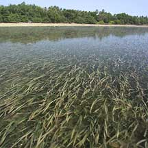 Pulau Semakau has a vast meadow of tape seagrass Pulau Semakau, Mar 03  Inrolled leaf edges. Tanah Merah, Sep 11 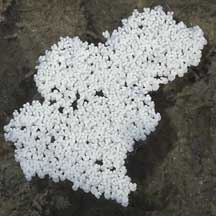 Male flowers sometimes form 'rafts' Sentosa, Mar 07 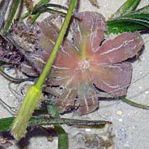 Pink opened fruit and narrow female flower on long stalk. Cyrene Reef, Jun 08 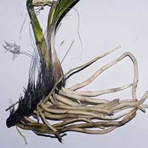 Hairy bristles on rhizomes. Thick hairless roots. |
|
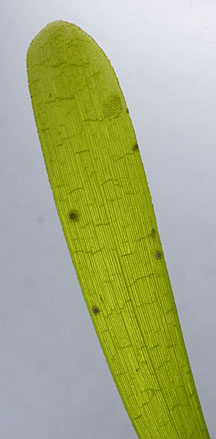 Leaf with smooth rounded tip. Pulau Semakau, Feb 12 |
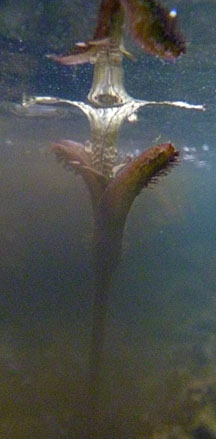 Petals fully open at the water surface at low spring tide. Sentosa, Nov 11 |
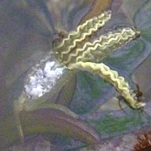 Sentosa, Nov 11 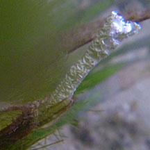 Petals are water repellant. Male flower in the centre. Petals zip up underwater. |
| Tape seagrass on Singapore shores |
| Photos of Tape seagrass for free download from wildsingapore flickr |
| Distribution in Singapore on this wildsingapore flickr map |
 Inflorescence at the base of the plant that produces the male flowers. Pulau Sekudu, Jan 06 |
 Male flower bract with tiny white male flowers. Pulau Sekudu, Jan 06 |
 The male flowers are tiny. Pulau Sekudu, Jan 06 |
 Female flower just opened.  Pulau Semakau, Feb 09 |
 Tiny balls of pollen transferred?  Pulau Semakau, Feb 09 |
 Fruit open with floating seeds.  Sentosa, Mar 07 |
 Unopened fruit. Sentosa, Jun 06 |
 Often grows in a ring. Tanah Merah, Jun 10 |
 Pulau Biola, Dec 09 |
 Pulau Sudong, Dec 09 |
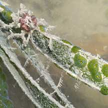 Pulau Hantu, Mar 06 |

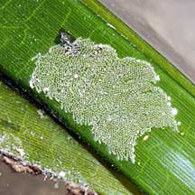 Egg capsules? Pulau Hantu, Jun 09 |
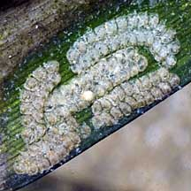 Egg capsules? Tanah Merah, Feb 10 |
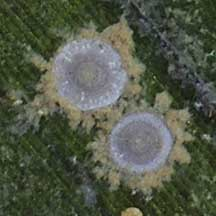 Unidentified organisms. Pulau Semakau, Feb 09 |
Links
References
|
|
You CAN make a difference for Singapore's seagrasses!  |